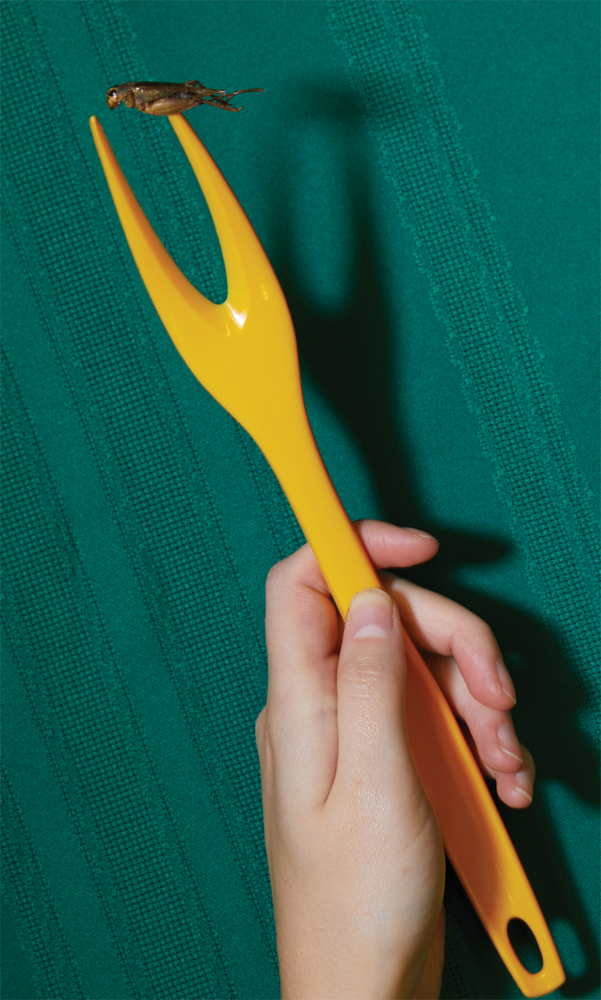

PASS THE CRICKET

As the world’s urban population increases and modern production and shipping methods make products more availabile, more and more people are turning to meat as their primary source of protein. People are now able to purchase delicacies they once could not afford or that were not available to them.⁹
As more people begin to live in urban areas, their access to cheap meat increase while their access to other necessary parts of a healthy diet decrease. Why would you spend your $5.00 on one cup of cubed melon when you could get twenty McNuggets with the same dough?
Like many industries, the meat industry is embarrassingly bad for the environment.⁴ Meat production is responsible for one fifth of all greenhouse gases. Cows and other animals emit methane, which is twenty three times more damaging to the environment than carbon dioxide.¹ Creating land and feed for livestock causes massive deforestation, further crippling the environment’s ability to absorb carbon dioxide.² Two thirds of the world’s arable farmland is used for livestock production.
This land could be used for farming other nutrient-rich and environmentally friendly crops instead of producing fancy sirloins for the rich. In the United States, we currently consume more than the recommended amount of meat for our health, while millions of impoverished nations go without. It’s a situation in which nobody wins. The prizes are either heart disease or nutritional deficiencies.

Our planet can’t keep up with the taxing strain of meat production. With the world’s population growing and being able to afford more meat, it is impossible for our planet to produce enough meat to satisfy the daily nutritional requirements for all of those people. Thus, we must find another source.¹¹
Don’t despair! Lo and behold, there is an answer: crickets! Crickets are a complete protein and high in iron. They are 65% protein by volume, whereas beef jerky is only 33% and chicken is merely 23%. Crickets convert biomass to fuel much more efficiently than traditional livestock. Only one and a half pounds of feed is needed to produce a pound of cricket, while it takes twenty pounds of feed to produce one pound of beef. 100% of a cricket can be eaten as food, whereas only 40% of a cow ends up at consumable meat.⁸ Modern companies have begun grinding them up into flour, showing their versatility. Cricket flour could even potentially be used as a therapeutic food for malnourished children.
Eighty percent of people in the world already eat insects regularly.⁷ Over 1,000 different types of insects are eaten globally as tasty delicacies, common treats, or even full-fledged meals. Colonization and ethnocentrism have contributed to changing perspectives in which insects have become less common in cultures where they used to often be on the dinner table.⁴

Capitalism will spare no chance to turn a profit, however, and the young cricket industry is no exception. Already cricket products are touted at ridiculously high prices, making them into yet another health food fad for affluent hipsters instead of an affordable nutritional source for society.⁷ Companies mark up their prices because of this fad — just like a lot of those fashionable, exotic fruits and vegetables you see at Whole Foods. If crickets don’t become more affordable, they’ll never become integrated into our diet. Access is not a problem, as a network of cricket suppliers has already been established in the West for pet food. Crickets have also already found their way into Michelin-starred restaurants and cookbooks on Amazon. The question is — when will they be affordable enough for you to serve at your dinner table?